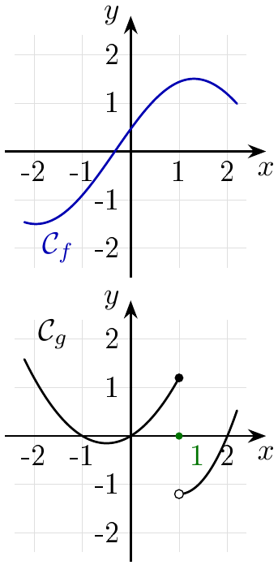
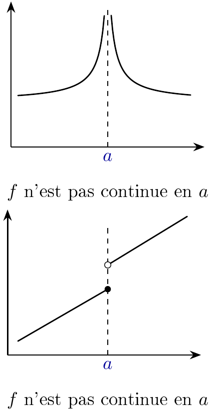
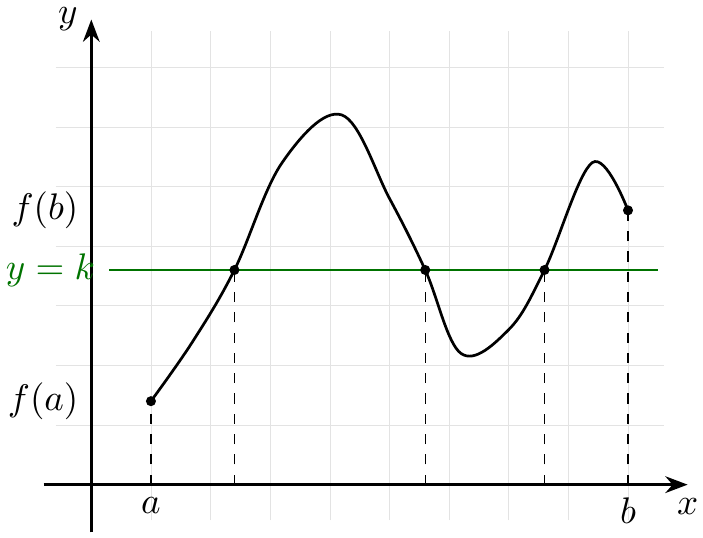
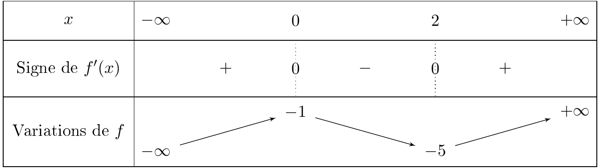
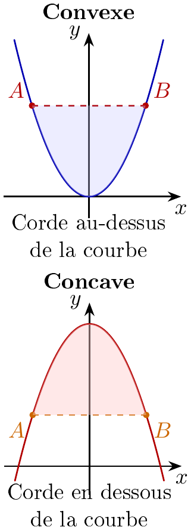
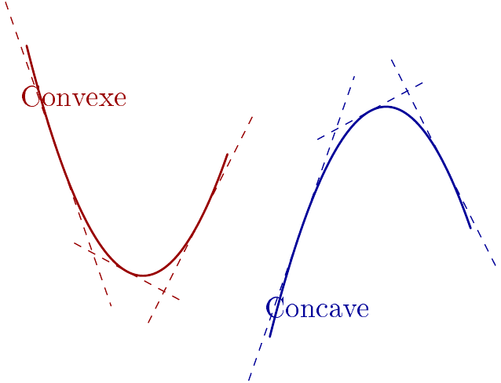
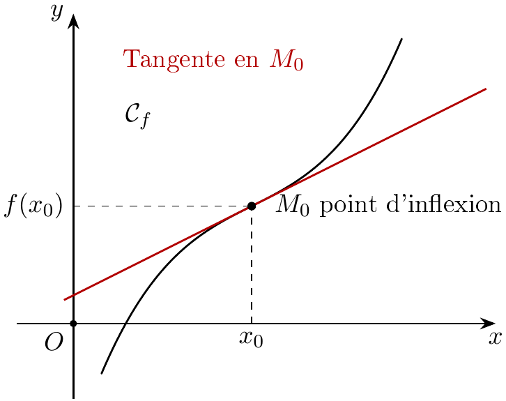

Chapitre 4 : Continuité et convexité
Terminale complémentaire · Chapitre 4 — Continuité et convexité · cours de Frederik de Peyrelongue
I. Continuité
I.1 Définition
une fonction est continue sur un intervalle, si sa courbe représentative peut se tracer sans lever le crayon.

La courbe de la fonction $f$ peut se tracer sans lever le crayon : elle est donc continue sur l'intervalle $[-2\,;2]$.
La courbe de la fonction $g$ ne peut pas se tracer sans lever le crayon : elle n'est donc pas continue sur l'intervalle $[-2\,;2]$.
Cependant, elle semble continue sur $[-2\,;1]$ et sur $]1\,;2]$.
Soit une fonction $f$ définie sur un intervalle $I$ contenant un réel $a$.
- $f$ est continue en $a$ si $\lim\limits_{x\to a}f(x)=f(a)$.
- $f$ est continue sur $I$ si $f$ est continue en tout point de $I$.
Contre-exemple :

I.2 Domaine de continuité des fonctions de référence
- Les fonctions polynômes sont continues sur $\R$.
- La fonction racine carrée est continue sur $[0\,;+\infty[$.
- La fonction exponentielle est continue sur $\R$.
- La fonction logarithme népérien est continue sur $]0\,;+\infty[$.
- La fonction inverse est continue sur $]-\infty\,;0[$ et sur $]0\,;+\infty[$.
- Les fonctions affines sont continues sur $\R$.
I.3 Opérations sur les fonctions continues
Les opérations algébriques conservent la continuité. Si $f$ et $g$ sont deux fonctions continues sur un intervalle $I$ :
| Opération | Propriété | Condition |
| Somme | $f+g$ est continue sur $I$ | Aucune |
| Produit | $f\times g$ est continue sur $I$ | Aucune |
| Quotient | $\dfrac{f}{g}$ est continue sur $I$ | $g(x)\neq 0$ pour tout $x\in I$ |
| Composée | $g\circ f$ est continue | $f$ continue sur $I$ et $g$ continue sur $f(I)$ |
I.4 Dérivabilité et continuité
Si une fonction $f$ est dérivable sur un intervalle $I$, alors elle est continue sur cet intervalle.
La réciproque est fausse.
Contre-exemple : la fonction racine carrée est continue en $0$ mais n'est pas dérivable en $0$.
II. Théorème des valeurs intermédiaires
II.1 Propriété fondamentale des fonctions continues
Soit $f$ une fonction continue sur un intervalle $I$.
Soient $a\in I$ et $b\in I$ avec $a<b$.
Pour tout réel $k$ compris entre $f(a)$ et $f(b)$, il existe au moins un réel $c$ compris entre $a$ et $b$ tel que
Autre formulation : si $k$ est compris entre $f(a)$ et $f(b)$, alors l'équation $f(x)=k$ a au moins une solution dans l'intervalle $[a\,;b]$.

II.2 Fonctions continues strictement monotones
Si $f$ est continue et strictement monotone sur $[a\,;b]$, alors, pour tout réel $k$ compris entre $f(a)$ et $f(b)$, l'équation $f(x)=k$ admet une unique solution dans $[a\,;b]$.
Soit la fonction $f(x)=x^{3}-3x^{2}-1$ définie sur $\R$. Quel est le nombre de solutions de l'équation $f(x)=4$ sur $\R$ ?
Méthode :
- On détermine $f'$ et son signe.
- On dresse le tableau de variations de $f$.
- On se sert des extremums pour localiser les intervalles où peuvent se trouver les solutions.
- On applique le corollaire du théorème des valeurs intermédiaires sur ces intervalles.
Solution : $f$ est une fonction polynôme, donc elle est dérivable et continue sur $\R$.

Sur $]-\infty\,;2]$, le maximum de $f$ vaut $-1$, donc $f(x)=4$ n'a pas de solution sur cet intervalle.
Sur $[2\,;+\infty[$, $f$ est continue et strictement croissante et $4$ est une valeur intermédiaire : donc, d'après le corollaire du théorème des valeurs intermédiaires, il existe un unique réel $c$ tel que $f(c)=4$.
Donc l'équation n'admet qu'une seule solution sur $\R$.
III. Convexité
III.1 Définition
Soit $f$ une fonction définie sur un intervalle $I$ et $\mathcal{C}_{f}$ la représentation graphique de la fonction $f$ dans un repère.
- Dire que $f$ est convexe sur $I$ signifie que, pour tout point $A$ et $B$ distincts de $\mathcal{C}_{f}$, le segment $[AB]$ est au-dessus de la courbe $\mathcal{C}_{f}$ entre les points $A$ et $B$.
- Dire que $f$ est concave sur $I$ signifie que, pour tout point $A$ et $B$ distincts de $\mathcal{C}_{f}$, le segment $[AB]$ est en dessous de la courbe $\mathcal{C}_{f}$ entre les points $A$ et $B$.

III.2 Cas d'une fonction dérivable
Soit $f$ une fonction dérivable sur un intervalle $I$ et $\mathcal{C}_{f}$ la représentation graphique de la fonction $f$ dans un repère.
- Dire que $f$ est convexe sur $I$ signifie que, sur l'intervalle $I$, la courbe $\mathcal{C}_{f}$ est au-dessus de chacune de ses tangentes.
- Dire que $f$ est concave sur $I$ signifie que, sur l'intervalle $I$, la courbe $\mathcal{C}_{f}$ est en dessous de chacune de ses tangentes.

III.3 Dérivée seconde et convexité
Soit $f$ une fonction dérivable sur $I$. Dire que $f$ est deux fois dérivable sur $I$ signifie que la fonction $f'$ est elle-même dérivable sur $I$. La dérivée de $f'$ se note $f''$ et est appelée dérivée seconde de $f$.
$f(x)=3x^{5}$ : la fonction $f$ est dérivable sur $\R$ car c'est un polynôme.
La fonction $f'$ est dérivable sur $\R$ car c'est un polynôme.
$f$ est une fonction dérivable sur $I$.
- $f$ est convexe sur $I$ si, et seulement si, $f'$ est une fonction croissante sur $I$.
- $f$ est concave sur $I$ si, et seulement si, $f'$ est une fonction décroissante sur $I$.
$f:x\longmapsto x^{2}$ est convexe sur $\R$.
En effet, $f'(x)=2x$ et $f''(x)=2>0$ ; donc la fonction $f'$ est strictement croissante sur $\R$, donc $f$ est une fonction convexe.
$f$ est une fonction deux fois dérivable sur $I$.
- $f$ est convexe sur $I$ si, et seulement si, pour tout réel $x$ de $I$, $f''(x)\geqslant 0$.
- $f$ est concave sur $I$ si, et seulement si, pour tout réel $x$ de $I$, $f''(x)\leqslant 0$.
III.4 Point d'inflexion
$f$ est une fonction dérivable sur $I$ et $a\in I$. $\mathcal{C}_{f}$ est la représentation graphique de la fonction $f$ dans un repère.
Dire que $A(a\,;f(a))$ est un point d'inflexion de $\mathcal{C}_{f}$ signifie qu'au point $A$, la courbe $\mathcal{C}_{f}$ traverse sa tangente.

$f$ est une fonction deux fois dérivable sur $I$. $\mathcal{C}_{f}$ est la représentation graphique de la fonction $f$ dans un repère.
$A(a\,;f(a))$ est un point d'inflexion de $\mathcal{C}_{f}$ si, et seulement si, $f''$ s'annule en $a$ et change de signe.
$f:x\longmapsto x^{3}$.

$f''$ s'annule en $0$ et change de signe, donc le point $A(0\,;0)$ est un point d'inflexion.